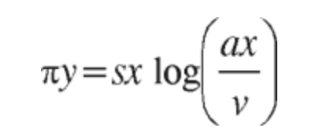

Prueba Suficiencia Academica
Este examen ha sido creado en base a exámenes de admisión de diferentes gestiones de la universidad, con el objetivo de brindarte una práctica más realista y efectiva para tu preparación académica. (SE ACTUALIZA CADA AÑO)
1. Resolver:
Responda esta pregunta leyendo el artículo desde la página 9 hasta la 11 del siguiente enlace:
articulo
Según la información presentada en el artículo, ¿cómo se compara la reducción de la superficie forestal registrada entre 1900 y 1960 con la pérdida de cobertura forestal ocurrida entre 1990 y 2020?
Según la información presentada en el artículo, ¿cómo se compara la reducción de la superficie forestal registrada entre 1900 y 1960 con la pérdida de cobertura forestal ocurrida entre 1990 y 2020?


2. Resolver:
Responda esta pregunta leyendo el artículo desde la página 9 hasta la 11 del siguiente enlace. articulo
De acuerdo con el análisis desarrollado en el artículo, ¿cuáles son las principales consecuencias de la deforestación en los Andes bolivianos?
De acuerdo con el análisis desarrollado en el artículo, ¿cuáles son las principales consecuencias de la deforestación en los Andes bolivianos?
3. Resolver:
Responda esta pregunta leyendo el artículo desde la página 9 hasta la 11 del siguiente enlace.articulo
De acuerdo con la explicación técnica presentada en el artículo, ¿cuál es el primer proceso que desencadena el aumento de la temperatura como consecuencia de la deforestación en los Andes bolivianos?
De acuerdo con la explicación técnica presentada en el artículo, ¿cuál es el primer proceso que desencadena el aumento de la temperatura como consecuencia de la deforestación en los Andes bolivianos?
4. Resolver:
Responda esta pregunta leyendo el artículo desde la página 9 hasta la 11 del siguiente enlace.articulo
A partir de los datos presentados en el artículo, ¿qué conclusión puede inferirse sobre la relación entre la pérdida de cobertura forestal y el aumento de la temperatura media en los Andes bolivianos entre 1990 y 2020?
A partir de los datos presentados en el artículo, ¿qué conclusión puede inferirse sobre la relación entre la pérdida de cobertura forestal y el aumento de la temperatura media en los Andes bolivianos entre 1990 y 2020?
5. Resolver:
Responda esta pregunta leyendo el artículo desde la página 9 hasta la 11 del siguiente enlace.articulo
De acuerdo con la explicación del balance energético presentada en el artículo, ¿qué componente aumenta directamente cuando disminuye el calor latente (LE) debido a la pérdida de cobertura forestal, favoreciendo el incremento de la temperatura del aire?
De acuerdo con la explicación del balance energético presentada en el artículo, ¿qué componente aumenta directamente cuando disminuye el calor latente (LE) debido a la pérdida de cobertura forestal, favoreciendo el incremento de la temperatura del aire?
6. Resolver:
Responda esta pregunta leyendo el artículo desde la página 9 hasta la 11 del siguiente enlace.articulo
De acuerdo con el análisis desarrollado en el artículo, ¿qué conjunto de actores ha participado tanto en los procesos históricos de transformación de los bosques como en las iniciativas actuales de restauración y conservación en los Andes bolivianos?
De acuerdo con el análisis desarrollado en el artículo, ¿qué conjunto de actores ha participado tanto en los procesos históricos de transformación de los bosques como en las iniciativas actuales de restauración y conservación en los Andes bolivianos?
7. Resolver:
Responda esta pregunta leyendo el artículo desde la página 9 hasta la 11 del siguiente enlace.articulo
Con base en la información presentada en el artículo, ¿cuál de las siguientes afirmaciones compara correctamente el impacto de la expansión agropecuaria durante la colonización española y el de la expansión agrícola comercial del siglo XX sobre el aumento de la temperatura local?
Con base en la información presentada en el artículo, ¿cuál de las siguientes afirmaciones compara correctamente el impacto de la expansión agropecuaria durante la colonización española y el de la expansión agrícola comercial del siglo XX sobre el aumento de la temperatura local?
8. Resolver:
Responda esta pregunta leyendo el artículo desde la página 9 hasta la 11 del siguiente enlace.articulo
De acuerdo con el análisis desarrollado en el artículo, ¿cuál es la diferencia fundamental entre el mecanismo de retroalimentación climática generado por la deforestación y el funcionamiento de los sistemas agroforestales tradicionales?
De acuerdo con el análisis desarrollado en el artículo, ¿cuál es la diferencia fundamental entre el mecanismo de retroalimentación climática generado por la deforestación y el funcionamiento de los sistemas agroforestales tradicionales?
9. Resolver:
Responda esta pregunta leyendo el artículo desde la página 9 hasta la 11 del siguiente enlace.articulo
A partir de la información presentada en el artículo, ¿qué principio general puede inferirse acerca de las consecuencias sociales de la deforestación en los Andes bolivianos?
A partir de la información presentada en el artículo, ¿qué principio general puede inferirse acerca de las consecuencias sociales de la deforestación en los Andes bolivianos?
10. Resolver:
Responda esta pregunta leyendo el artículo desde la página 9 hasta la 11 del siguiente enlace.articulo
Con base en la información presentada en el artículo, ¿qué efecto indirecto es más probable que produzca la ampliación del programa Biodiversidad Andina (2020–2024) sobre la vulnerabilidad de los sistemas agropecuarios locales frente a la variabilidad de las precipitaciones?
Con base en la información presentada en el artículo, ¿qué efecto indirecto es más probable que produzca la ampliación del programa Biodiversidad Andina (2020–2024) sobre la vulnerabilidad de los sistemas agropecuarios locales frente a la variabilidad de las precipitaciones?
11. Resolver:
Responda esta pregunta leyendo el artículo desde la página 18 hasta la 19 del siguiente enlace.articulo
Según el artículo, ¿cómo se define el concepto de brecha digital en el contexto de la educación boliviana?
Según el artículo, ¿cómo se define el concepto de brecha digital en el contexto de la educación boliviana?
12. Resolver:
Responda esta pregunta leyendo el artículo desde la página 18 hasta la 19 del siguiente enlace.articulo
A partir de los datos presentados en el artículo, ¿cuál es la secuencia correcta de los indicadores de conectividad y acceso a internet en Bolivia durante el año 2023? (i) Porcentaje de hogares urbanos con acceso a internet. (ii) Porcentaje de hogares rurales con acceso a internet. (iii) Porcentaje de estudiantes de educación primaria con acceso regular a banda ancha en el hogar. (iv) Porcentaje de estudiantes de educación secundaria con acceso regular a banda ancha en el hogar.
A partir de los datos presentados en el artículo, ¿cuál es la secuencia correcta de los indicadores de conectividad y acceso a internet en Bolivia durante el año 2023? (i) Porcentaje de hogares urbanos con acceso a internet. (ii) Porcentaje de hogares rurales con acceso a internet. (iii) Porcentaje de estudiantes de educación primaria con acceso regular a banda ancha en el hogar. (iv) Porcentaje de estudiantes de educación secundaria con acceso regular a banda ancha en el hogar.
13. Resolver:
Responda esta pregunta leyendo el artículo desde la página 18 hasta la 19 del siguiente enlace.articulo
Según el análisis presentado en el artículo, ¿cuáles son los pilares fundamentales que deben integrar las políticas públicas para lograr una educación digital inclusiva en Bolivia?
Según el análisis presentado en el artículo, ¿cuáles son los pilares fundamentales que deben integrar las políticas públicas para lograr una educación digital inclusiva en Bolivia?
14. Resolver:
Responda esta pregunta leyendo el artículo desde la página 18 hasta la 19 del siguiente enlace.articulo
Según lo expuesto en el artículo, ¿qué institución de educación superior implementó el Programa de Formación Docente en Tecnologías Educativas (FOTED) para fortalecer las competencias digitales de los docentes?
Según lo expuesto en el artículo, ¿qué institución de educación superior implementó el Programa de Formación Docente en Tecnologías Educativas (FOTED) para fortalecer las competencias digitales de los docentes?
15. Resolver:
Responda esta pregunta leyendo el artículo desde la página 18 hasta la 19 del siguiente enlace.articulo
Según lo mencionado en el artículo, ¿en qué porcentaje se redujo el costo promedio por kilómetro de fibra óptica respecto a estimaciones previas durante la implementación del Programa Nacional de Conectividad Rural (PNCR)?
Según lo mencionado en el artículo, ¿en qué porcentaje se redujo el costo promedio por kilómetro de fibra óptica respecto a estimaciones previas durante la implementación del Programa Nacional de Conectividad Rural (PNCR)?
16. Resolver:
Responda esta pregunta leyendo el artículo desde la página 18 hasta la 19 del siguiente enlace.articulo
Del análisis presentado en el artículo, ¿cuál es la principal barrera que dificulta el logro de una educación digital equitativa en Bolivia?
Del análisis presentado en el artículo, ¿cuál es la principal barrera que dificulta el logro de una educación digital equitativa en Bolivia?
17. Resolver:
Responda esta pregunta leyendo el artículo desde la página 18 hasta la 19 del siguiente enlace.articulo
Según la información presentada en el artículo, ¿qué acciones son necesarias para reducir la brecha de aprendizaje relacionada con la falta de conectividad en Bolivia?
Según la información presentada en el artículo, ¿qué acciones son necesarias para reducir la brecha de aprendizaje relacionada con la falta de conectividad en Bolivia?
18. Resolver:
Responda esta pregunta leyendo el artículo desde la página 18 hasta la 19 del siguiente enlace.articulo
Según el análisis desarrollado en el artículo, ¿cuál es la estrategia más eficaz para reducir la brecha de conectividad digital en Bolivia?
Según el análisis desarrollado en el artículo, ¿cuál es la estrategia más eficaz para reducir la brecha de conectividad digital en Bolivia?
19. Resolver:
Responda esta pregunta leyendo el artículo desde la página 18 hasta la 19 del siguiente enlace.articulo
Basándose en la información proporcionada por el artículo, ¿cuál de las siguientes afirmaciones refleja con mayor precisión la diferencia entre la expansión de la infraestructura de fibra óptica y los programas de dispositivos compartidos como estrategias para reducir la brecha digital en Bolivia?
Basándose en la información proporcionada por el artículo, ¿cuál de las siguientes afirmaciones refleja con mayor precisión la diferencia entre la expansión de la infraestructura de fibra óptica y los programas de dispositivos compartidos como estrategias para reducir la brecha digital en Bolivia?
20. Resolver:
Responda esta pregunta leyendo el artículo desde la página 18 hasta la 19 del siguiente enlace.articulo
Del análisis presentado en el artículo, ¿qué combinación de actores resulta más eficaz para reducir la brecha digital educativa en Bolivia?
Del análisis presentado en el artículo, ¿qué combinación de actores resulta más eficaz para reducir la brecha digital educativa en Bolivia?
21. Resolver:
Responda esta pregunta leyendo el artículo desde la página 80 hasta la 81 del siguiente enlace.articulo
Según el artículo, ¿cuál es la secuencia correcta de acciones y actores involucrados en la gestión sostenible de la cuenca del Río Desaguadero, desde el monitoreo de los glaciares hasta la reforestación de zonas altoandinas?
Según el artículo, ¿cuál es la secuencia correcta de acciones y actores involucrados en la gestión sostenible de la cuenca del Río Desaguadero, desde el monitoreo de los glaciares hasta la reforestación de zonas altoandinas?
22. Resolver:
Responda esta pregunta leyendo el artículo desde la página 80 hasta la 81 del siguiente enlace.articulo
Según el artículo, ¿cuál es el orden correcto de las acciones planteadas para mitigar las consecuencias económicas del retroceso glaciar en la cuenca del Río Desaguadero?
Según el artículo, ¿cuál es el orden correcto de las acciones planteadas para mitigar las consecuencias económicas del retroceso glaciar en la cuenca del Río Desaguadero?
23. Resolver:
Responda esta pregunta leyendo el artículo desde la página 80 hasta la 81 del siguiente enlace.articulo
Según lo expuesto en el artículo, ¿cuáles son los principales factores que han intensificado la fusión glaciar (M) en el Altiplano boliviano?
Según lo expuesto en el artículo, ¿cuáles son los principales factores que han intensificado la fusión glaciar (M) en el Altiplano boliviano?
24. Resolver:
Responda esta pregunta leyendo el artículo desde la página 80 hasta la 81 del siguiente enlace.articulo
Basándose en la información proporcionada en el artículo, ¿cómo se contrasta la idea de que la pérdida de glaciares afecta principalmente al turismo con la realidad de sus consecuencias socioeconómicas en el Altiplano boliviano?
Basándose en la información proporcionada en el artículo, ¿cómo se contrasta la idea de que la pérdida de glaciares afecta principalmente al turismo con la realidad de sus consecuencias socioeconómicas en el Altiplano boliviano?
25. Resolver:
Responda esta pregunta leyendo el artículo desde la página 80 hasta la 81 del siguiente enlace.articulo
A partir de lo expuesto en el artículo, ¿cuál de las siguientes afirmaciones resume mejor la implicación ética relacionada con la aplicación de tecnologías de ahorro hídrico y estrategias de conservación ambiental frente al retroceso glaciar del Altiplano boliviano?
A partir de lo expuesto en el artículo, ¿cuál de las siguientes afirmaciones resume mejor la implicación ética relacionada con la aplicación de tecnologías de ahorro hídrico y estrategias de conservación ambiental frente al retroceso glaciar del Altiplano boliviano?
26. Resolver:
La persona postulante está a cargo del último curso de secundaria y durante una sesión de preparación para los exámenes de ingreso universitario observa que un estudiante, normalmente destacado, cuestiona públicamente la metodología utilizada, afirmando que es “anticuada e inútil”. Algunos compañeros comienzan a apoyar su opinión y se genera un ambiente de tensión dentro del aula. Ante esta situación, ¿cuál sería la respuesta más adecuada para manejar el conflicto de manera constructiva?
27. Resolver:
Durante una actividad grupal de preparación para un examen de ingreso, dos estudiantes tienen opiniones diferentes sobre la forma correcta de resolver un problema. La discusión comienza a elevar el tono y afecta la participación del resto del equipo. ¿Cuál sería la actuación más adecuada?
28. Resolver:
Un estudiante manifiesta frustración porque siente que sus resultados en los simulacros de ingreso no mejoran a pesar de su esfuerzo. ¿Cuál sería la respuesta más adecuada?
29. Resolver:
Durante una clase, un estudiante realiza una crítica sobre la organización del curso, pero expresa sus ideas de manera respetuosa y propone alternativas. ¿Cómo debería actuar la persona responsable del grupo?
30. Resolver:
La persona postulante observa que algunos estudiantes pierden motivación durante la preparación para el examen de ingreso debido a la presión académica. ¿Qué acción refleja mejor una adecuada gestión emocional y liderazgo?
31. Resolver:
Durante una jornada de observación en una unidad educativa rural multigrado, la persona postulante identifica que estudiantes de diferentes edades presentan dificultades para colaborar entre sí. El director pone a disposición las planificaciones de aula y los registros de evaluación diagnóstica de los últimos tres meses. Como futura maestra o futuro maestro interesado en comprender la situación, ¿cuál sería la acción más pertinente?
32. Resolver:
Durante una práctica de observación educativa, la persona postulante nota que algunos estudiantes tienen menor participación debido a diferencias de edad y ritmo de aprendizaje. ¿Qué acción demuestra una actitud docente adecuada?
33. Resolver:
La persona postulante recibe información de que varios estudiantes tienen bajo rendimiento, pero antes de tomar decisiones necesita comprender el problema. ¿Cuál sería la conducta más adecuada?
34. Resolver:
En una escuela multigrado, la persona postulante observa que las estrategias utilizadas no favorecen la interacción entre estudiantes de distintas edades. ¿Qué alternativa refleja mejor una actitud reflexiva?
35. Resolver:
Durante una observación escolar, la persona postulante descubre que los registros de evaluación muestran diferencias importantes entre estudiantes. ¿Cómo debería interpretar esta información?
36. Resolver:
Durante una reunión con padres de familia, un padre expresa con preocupación y emotividad que su hijo, quien presenta dificultades de aprendizaje, no estaría recibiendo el apoyo suficiente. Mientras explica su situación, algunos padres muestran señales de impaciencia y desean continuar con otros temas de la reunión. Como maestra o maestro responsable del encuentro, ¿cuál sería la estrategia más adecuada para manejar la situación?
37. Resolver:
Durante una clase, una estudiante manifiesta tristeza porque siente que sus compañeros avanzan más rápido que ella y teme no lograr sus objetivos académicos. ¿Cuál sería la respuesta más adecuada del docente?
38. Resolver:
En una reunión escolar, dos padres expresan opiniones diferentes sobre la forma de apoyar a los estudiantes con dificultades de aprendizaje. ¿Qué actuación refleja mejores habilidades de comunicación y liderazgo?
39. Resolver:
Una familia comunica al docente que su hijo presenta dificultades académicas, pero también demuestra interés en colaborar para mejorar su aprendizaje. ¿Cuál debería ser la respuesta del docente?
40. Resolver:
Durante una reunión de padres, un participante expresa una crítica hacia la forma en que se está desarrollando el proceso educativo. ¿Cuál sería la respuesta más adecuada del docente?
41. Resolver:
Durante una reunión docente para planificar un proyecto interdisciplinario anual, surge un desacuerdo entre dos colegas con diferentes enfoques pedagógicos. La profesora de Ciencias Sociales plantea un proyecto basado en la investigación histórica y el análisis crítico de fuentes, mientras que el profesor de Matemática propone un enfoque centrado en estadísticas y modelamiento de fenómenos sociales. La discusión aumenta de intensidad debido a que ambos defienden la importancia de su área. Como maestra o maestro que busca mediar este conflicto, ¿cuál sería la estrategia más adecuada?
42. Resolver:
Durante una planificación académica, varios docentes tienen ideas diferentes sobre cómo abordar un proyecto educativo. ¿Qué actitud demuestra una adecuada capacidad de trabajo colaborativo?
43. Resolver:
Un equipo docente debe diseñar una actividad que combine conocimientos de diferentes asignaturas, pero existen dificultades para ponerse de acuerdo sobre los objetivos. ¿Cuál sería la acción más pertinente?
44. Resolver:
Durante una reunión de docentes, un compañero presenta una idea diferente a la mayoría del equipo. ¿Cuál sería la respuesta más adecuada para fortalecer la colaboración?
45. Resolver:
En un equipo docente surge un conflicto porque algunos integrantes sienten que sus opiniones no están siendo consideradas. ¿Qué acción refleja mejores habilidades de liderazgo?
46. Resolver:
Durante una actividad grupal en cuarto de primaria, un estudiante con diagnóstico de TEA (Trastorno del Espectro Autista) manifiesta incomodidad debido a los ruidos intensos y la cercanía física de sus compañeros. Algunos estudiantes comienzan a burlarse de sus reacciones, imitando sus movimientos y aumentando intencionalmente el volumen de voz. Como maestra o maestro responsable del aula, ¿cuál sería la intervención más adecuada ante esta situación?
47. Resolver:
Durante una clase, una estudiante presenta dificultades para participar en actividades grupales debido a características personales que requieren mayor apoyo. ¿Qué acción refleja una práctica educativa inclusiva?
48. Resolver:
Un docente observa que algunos estudiantes realizan comentarios negativos sobre un compañero debido a sus características personales. ¿Cuál debería ser su primera acción?
49. Resolver:
Una maestra desea fortalecer la convivencia entre estudiantes con diferentes necesidades de aprendizaje. ¿Qué estrategia sería más adecuada?
50. Resolver:
Durante una actividad escolar, un estudiante reacciona de manera diferente ante ciertos estímulos del ambiente y sus compañeros muestran incomprensión. ¿Qué debería hacer la persona docente?
51. Resolver:
¿Cuál es la finalidad principal de utilizar un modelo físico en el estudio o diseño de un objeto, sistema o estructura?
52. Resolver:
En el estudio de los fenómenos térmicos, la Física distingue claramente entre los conceptos de calor y temperatura. Desde esta perspectiva, ¿cómo se define correctamente el calor?
53. Resolver:
¿Cómo se clasifica el sonido según la dirección de vibración de las partículas del medio por el que se propaga?
54. Resolver:
En el estudio de las ondas, el sonido presenta características particulares relacionadas con su forma de propagación. ¿Cómo se clasifica el sonido según el tipo de vibración de las partículas del medio?
55. Resolver:
Un objeto se desplaza en línea recta con velocidad constante. ¿Cuál de las siguientes afirmaciones describe correctamente este tipo de movimiento?
56. Resolver:
En matemática, el concepto de infinito se utiliza para describir situaciones que no tienen un límite final. ¿Cuál de las siguientes afirmaciones define correctamente el concepto de infinito?
57. Resolver:
La matemática es considerada una herramienta fundamental para el desarrollo de las ciencias naturales y sociales, debido a su capacidad de representar y analizar fenómenos. Desde una perspectiva científica, ¿por qué la matemática es esencial para la ciencia?
58. Resolver:
La suma de los ángulos internos de un triángulo es una propiedad fundamental de la geometría euclidiana y permite resolver diversos problemas geométricos. ¿Cuál es la medida de la suma de los ángulos internos de cualquier triángulo?
59. Resolver:
En el análisis de rectas en el plano cartesiano, la pendiente permite interpretar la relación entre dos variables. Si una recta tiene pendiente negativa, ¿qué significa esta característica?
60. Resolver:
El valor absoluto de un número real representa la distancia de dicho número respecto al cero en la recta numérica, sin considerar su signo. ¿Cuál es el valor absoluto de −7?
61. Resolver:
El dióxido de carbono es un compuesto químico presente en procesos como la respiración de los seres vivos y cumple un papel importante en el efecto invernadero. ¿Cuál es su fórmula química correcta?
62. Resolver:
En la formulación de compuestos iónicos, la fórmula química representa la proporción en la que se combinan los iones que forman una sustancia. ¿Cuál es la fórmula química correcta del cloruro de sodio, conocido comúnmente como sal de mesa?
63. Resolver:
En el estudio de la estructura de la materia, los modelos moleculares son herramientas utilizadas en Química para representar sustancias que no pueden observarse directamente. ¿Cuál es la finalidad principal de los modelos moleculares?
64. Resolver:
En el estudio de la Química orgánica, los hidrocarburos constituyen un grupo fundamental de compuestos debido a su composición elemental. ¿Por qué elementos químicos están formados exclusivamente los hidrocarburos?
65. Resolver:
En el estudio de las soluciones acuosas, el comportamiento químico de los ácidos y las bases puede analizarse mediante una escala que indica su grado de acidez o basicidad. ¿Qué magnitud permite determinar esta característica de una solución?
66. Resolver:
El planeta Tierra realiza movimientos constantes que generan diversos efectos sobre la vida y los fenómenos geográficos. Considerando los movimientos terrestres, ¿cuál de los siguientes fenómenos es consecuencia directa del movimiento de rotación de la Tierra?
67. Resolver:
La distribución de los climas en la Tierra está determinada por factores astronómicos y geográficos relacionados con la forma del planeta y la distribución de la energía solar. Desde la geografía física, ¿cuál es el criterio principal utilizado para establecer las zonas climáticas de la Tierra a escala global?
68. Resolver:
Desde una perspectiva psicológica y educativa, el error en el aprendizaje no se considera únicamente como una falla, sino como una fuente de información que permite comprender el proceso de construcción del conocimiento. Esta concepción sostiene que el error es:
69. Resolver:
Uno de los problemas clásicos de la Filosofía es el del libre albedrío. ¿Qué cuestión fundamental busca esclarecer este problema filosófico?
70. Resolver:
La Filosofía moderna surge entre los siglos XVII y XVIII en un contexto de transformaciones científicas, culturales e intelectuales. ¿Qué rasgo caracteriza de manera central al pensamiento filosófico de la modernidad?
71. Resolver:
En el marco de las transformaciones educativas impulsadas durante la década de 1990, el Estado boliviano implementó en 1994 una reforma orientada a responder a la diversidad social, cultural y lingüística del país. Desde una perspectiva histórico-educativa, ¿cuál fue el eje central que estructuró esta reforma y redefinió el enfoque del sistema educativo nacional?
72. Resolver:
Tras un prolongado periodo de gobiernos militares y de facto que interrumpieron recurrentemente el orden constitucional, Bolivia inició en 1982 un proceso de transición política que marcó un hito en su historia contemporánea. Desde una perspectiva histórico-política, ¿cuál fue el significado principal del retorno a la democracia en ese contexto?
73. Resolver:
La clasificación de los seres vivos requiere criterios científicos que permitan distinguir grupos naturales y comprender sus relaciones evolutivas. Desde el punto de vista biológico, ¿qué se entiende por especie?
74. Resolver:
En los ecosistemas, los organismos establecen relaciones alimentarias que permiten el flujo de materia y energía entre los diferentes niveles tróficos. En este contexto, ¿qué representa una cadena alimentaria dentro de un ecosistema?
75. Resolver:
En el ámbito de la seguridad informática, una contraseña segura debe cumplir ciertas características para reducir el riesgo de acceso no autorizado. ¿Cuál de las siguientes opciones describe mejor una contraseña segura?
76. Resolver:
En el ámbito de Internet y las tecnologías digitales, la dirección URL cumple una función fundamental para acceder a los recursos disponibles en la web. ¿Para qué se utiliza una dirección URL?
77. Resolver:
Dentro de la poesía boliviana contemporánea, algunos autores se alejaron del realismo social tradicional para explorar dimensiones existenciales, urbanas y simbólicas del ser humano. ¿Qué autor es reconocido por una poesía profundamente introspectiva, filosófica y vinculada con la experiencia urbana de la ciudad de La Paz?
78. Resolver:
Sea ABCD un rectangulo M el punto medio de BC, PM perpendicular al plano ABC , O centro del rectangulo , si BC=2AB=8 y PM=AB, entonces el area de la region triangular APO es...
79. Resolver:
El ponente en un Congreso de Matemática mencionó a su audiencia «¡Qué curioso!, la cantidad de personas presentes es igual a la cantidad de fracciones propias e irreducibles que existen de la forma 𝑁/161». ¿Cuántas personas asistieron a dicho Congreso?
80. Resolver:
La profesora Milagros forma grupos de trabajo de por lo menos tres estudiantes por cada grupo. Si en el salón hay 11 estudiantes, ¿cuántas opciones distintas tiene para formar los grupos?
81. Resolver:
La siguiente sucesión representa el crecimiento de la población de una aldea:
2, 4, 8, 16, ¿?
Si cada término se obtiene multiplicando por 2 el término anterior, ¿cuál es el número que continúa la sucesión?

82. Resolver:
Observe la siguiente sucesión de letras y determine cuál es la letra que continúa:
A, C, F, J, O, ¿?
83. Resolver:
En una campaña de distribución de caramelos, la cantidad entregada se duplica cada día con respecto al día anterior. Si durante los primeros cuatro días se repartieron las siguientes cantidades:
Día 1: 3 → Día 2: 6 → Día 3: 12 → Día 4: 24
¿Cuántos caramelos se repartirán durante el Día 5?
84. Resolver:
En una institución educativa se organizan filas de sillas para una presentación. La primera fila tiene 5 sillas y, en cada fila siguiente, se colocan 2 sillas más que en la fila anterior. ¿Cuántas sillas tendrá la quinta fila?
85. Resolver:
La siguiente sucesión representa la cantidad de libros que un estudiante lee cada mes:
2, 5, 10, 17, 26, ¿?
Si la secuencia sigue el mismo patrón, ¿cuántos libros leerá durante el sexto mes?
86. Resolver:
En una fila de ladrillos se aplica un patrón repetitivo de colores: rojo, verde, azul, rojo, verde, azul, y así sucesivamente. ¿De qué color será el ladrillo que ocupa la posición número 15?
87. Resolver:
En una biblioteca escolar, los libros de la serie “Descubriendo la Ciencia” se organizan de acuerdo con una secuencia. Cada nuevo libro tiene 15 páginas más que el anterior. Si el primer libro tiene 8 páginas, ¿cuántas páginas tendrá el quinto libro?
88. Resolver:
En una escuela se organizan filas de sillas para los estudiantes siguiendo una determinada secuencia. La primera fila tiene 2 sillas, la segunda 5, la tercera 10 y la cuarta 17. ¿Cuántas sillas deberá contener la quinta fila para mantener la misma lógica?
89. Resolver:
Observe las siguientes sucesiones y determine el término que continúa en cada una de ellas, respectivamente:
Serie numérica: 2, 5, 8, 11, …
Serie de letras: A, C, E, G, …
¿Cuál es el siguiente término de cada serie?
90. Resolver:
Durante la coordinación pedagógica de una unidad educativa, se programó una serie de jornadas de lectura. A cada clase se le entregó una cantidad de libros siguiendo el siguiente patrón:
5, 9, 13, 17, ¿?
Si la secuencia continúa con el mismo patrón, ¿cuántos libros se entregarán a la siguiente clase?
91. Resolver:
Observe la siguiente secuencia de figuras y analice el patrón:
1.ª figura: un círculo con 1 punto rojo.
2.ª figura: un círculo con 2 puntos azules.
3.ª figura: un círculo con 3 puntos rojos.
4.ª figura: un círculo con 4 puntos azules.
¿Cuál será la descripción de la quinta figura?
92. Resolver:
Observe la siguiente secuencia de fichas y analice el patrón de cambio en la figura y el color:
1.ª ficha: círculo rojo
2.ª ficha: cuadrado rojo
3.ª ficha: cuadrado azul
4.ª ficha: triángulo azul
Si se mantiene el mismo patrón, ¿qué figura y color aparecerán en la quinta ficha?
93. Resolver:
Observe los patrones de colores de las siguientes filas de fichas:
Fila 1: rojo, azul, rojo, azul, rojo, azul, …
Fila 2: rojo, rojo, azul, azul, rojo, rojo, azul, azul, …
¿Cuál de las siguientes afirmaciones describe correctamente la relación entre los patrones de colores de ambas filas?
94. Resolver:
En una hoja de trabajo se presentan dos sucesiones numéricas:
Fila A: 2, 4, 8, 16, …
Fila B: 3, 6, 12, 24, …
¿Cuál de las siguientes afirmaciones describe correctamente la relación entre los términos correspondientes de la Fila B y la Fila A?
95. Resolver:
En una exposición de arte digital, una serie de figuras aparece en la pantalla siguiendo una regla determinada. Las áreas de las figuras, expresadas en unidades cuadradas, son:
3, 8, 15, 24, ¿?
Si la secuencia continúa siguiendo el mismo patrón, ¿cuál será el área de la siguiente figura?
96. Resolver:
Observe las siguientes filas de figuras:
Primera fila: triángulo, cuadrado, círculo.
Segunda fila: triángulo rojo, cuadrado rojo, círculo rojo.
La regla establece que cada figura de la segunda fila conserva la misma forma y posición que la figura correspondiente de la primera fila, pero cambia su color a rojo.
¿Qué figura corresponde a la tercera posición de la segunda fila?
97. Resolver:
En una escuela primaria se diseña un mosaico para el patio siguiendo dos patrones diferentes:
Primera fila: rojo, azul, rojo, azul, rojo, azul, …
Segunda fila: 2 puntos, 4 puntos, 6 puntos, 8 puntos, …
Al comparar ambas filas, ¿cuál de las siguientes afirmaciones describe correctamente los patrones?
98. Resolver:
En una feria, varios puestos están organizados en una fila y la cantidad de manzanas que vende cada puesto sigue un patrón determinado. El primer puesto vende 2 manzanas, el segundo 6, el tercero 12 y el cuarto 20. Si la secuencia continúa con la misma lógica, ¿cuántas manzanas venderá el sexto puesto?
99. Resolver:
En una fila de bloques se siguen simultáneamente dos patrones: la altura de cada bloque es el doble de la del bloque anterior y el color alterna entre rojo y azul, comenzando con rojo. Si los primeros bloques tienen las siguientes características:
1 cm rojo → 2 cm azul → 4 cm rojo → 8 cm azul → …
¿Cuál será la altura y el color del siguiente bloque?
100. Resolver:
En una unidad educativa, un profesor asigna ejercicios de práctica adicional cada semana siguiendo una secuencia determinada. Durante las primeras cuatro semanas asigna:
Semana 1: 2 ejercicios
Semana 2: 6 ejercicios
Semana 3: 12 ejercicios
Semana 4: 20 ejercicios
Si la secuencia continúa siguiendo el mismo patrón, ¿cuántos ejercicios deberá asignar en la semana 5?